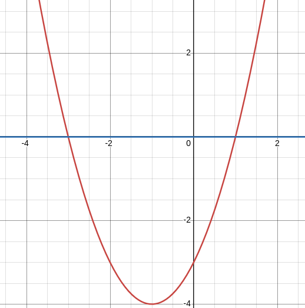

Introduccion
La forma de la parabola esta definida por:
$f(x) = ax^2 + bx + c$ | donde $a,b,c \in \mathbb{R}$.
Las preguntas que respondere es, como llegamos de la forma de arriba, a la famosa:
$$\frac{-b \pm \sqrt{b^2 - 4ac}}{2a}$$
Y que es lo que ocurre en la formula.
Que sucede detras de la formula?
Podemos notar que si la forma de la parabola es $f(x) = ax^2 + bx + c$ Entonces igualarla a 0 nos da los puntos en los que nuestro objeto, en este caso la parabola, toca a $y = 0$.

Entonces nuestra formula para saber en que puntos la parabola toca a $y = 0$, esta definida por la ecuacion: $ax^2 + bx + c = 0$
Usaremos un poco de algebra para la deduccion.
Deduccion
Para la deduccion usaremos un producto notable, el del trinomio cuadrado perfecto: $$(a + b)^2 = a^2 + 2ab + b^2$$
Aplicando algebra, dividimos toda la expresion $ax^2 + bx + c = 0$ por $a$. Entonces: $$\frac{ax^2}{a} + \frac{bx}{a} + \frac{c}{a} = \frac {0}{a}$$ Nota : es importante notar que aun cuando $a \in \mathbb{R}$, si $a = 0$ entonces el objeto en cuestion NO seria una parabola (ya que $a = 0$ anula el termino cuadratico), por lo que podria ser resuelto mediante otro metodo que no sea la formula cuadratica.
Despues de la simplificacion nos queda: $$x^2 + \frac{bx}{a} + \frac{c}{a} = 0$$ Y despejando: $$x^2 + \frac{bx}{a} = -\frac{c}{a}$$
Recordando la identidad el producto notable, necesitamos que el primer termino sea $x^2$. Por lo que: $$(x + n)^2 = x^2 + \frac{bx}{a} + n^2 = -\frac{c}{a}$$ El problema es encontrar al $n$ tal que $(x + n)^2 = x^2 + \frac{bx}{a} + n^2 = -\frac{c}{a}$. Aqui viene el paso mas importante, y es que el termino $n$ no es tan sencillo de deducir, pero si recapitulamos, podemos darnos cuenta que la identidad del trinomio cuadrado perfecto, en su segundo termino, contiene $2ab$, por lo que tenemos $2xn$, y para que $2xn = \frac{bx}{a}$ no queda otra opcion mas que: $$n = \frac{b}{2a}$$ Por lo que expandiendo se obtiene: $$(x + \frac{b}{2a})^2 = x^2 + \frac{bx}{a} + \frac{b^2}{4a^2}$$ Gracias a completar el cuadrado, nos queda un termino extra, concretamente: $$\frac{b^2}{4a^2}$$ Entonces necesitamos restarlo para no "agregar" ese termino extra. Por lo que la ecuacion queda como : $$(x + \frac{b}{2a})^2 -\frac{b^2}{4a^2} = -\frac{c}{a}$$ Despejamos y obtenemos: $$(x + \frac{b}{2a})^2 = \frac{b^2}{4a^2} - \frac{c}{a}$$ Aplicamos raiz cuadrada a ambos lados y obtenemos: $$\sqrt{(x + \frac{b}{2a})^2} = \sqrt{\frac{b^2}{4a^2} - \frac{c}{a}}$$ Del lado izquierdo de la ecuacion podemos simplificar la raiz y el cuadrado y obtener $\pm$ del lado derecho. $$x + \frac{b}{2a} = \pm\sqrt{\frac{b^2}{4a^2} - \frac{c}{a}}$$ Para lograr la resta de $\frac{b^2}{4a^2} - \frac{c}{a}$ multiplicamos a $\frac{c}{a}$ por $\frac{4a}{4a}$ y queda: $$\frac{4ac}{4a^2} \implies x + \frac{b}{2a} = \pm \sqrt{\frac{b^2}{4a^2} - \frac{4ac}{4a^2}}$$ Ahora restando obtenemos $$ x + \frac{b}{2a} = \pm \sqrt{\frac{b^2 - 4ac}{4a^2}}$$ Aplicando la propiedad $\sqrt{\frac{a}{b}} = \frac{\sqrt{a}}{\sqrt{b}}$ nos queda: $$x + \frac{b}{2a} = \pm \frac{\sqrt{b^2 - 4ac}}{\sqrt{4a^2}}$$ Simplificando: $$x + \frac{b}{2a} = \pm \frac{\sqrt{b^2 - 4ac}}{2a}$$ Ahora despejando $\frac{b}{2a}$ nos queda: $$x = -\frac{b}{2a} \pm \frac{\sqrt{b^2 - 4ac}}{2a}$$ Y como ambos tienen el mismo denominador, finalmente nos queda la formula: $$x = \frac{-b \pm \sqrt{b^2 - 4ac}}{2a}$$